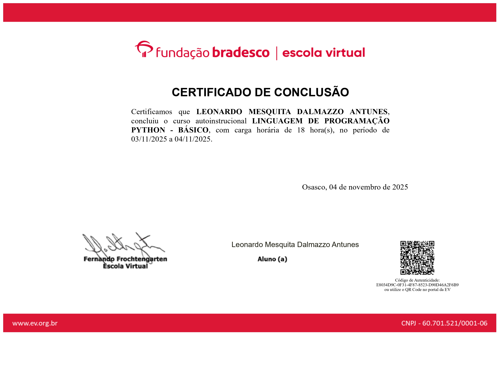
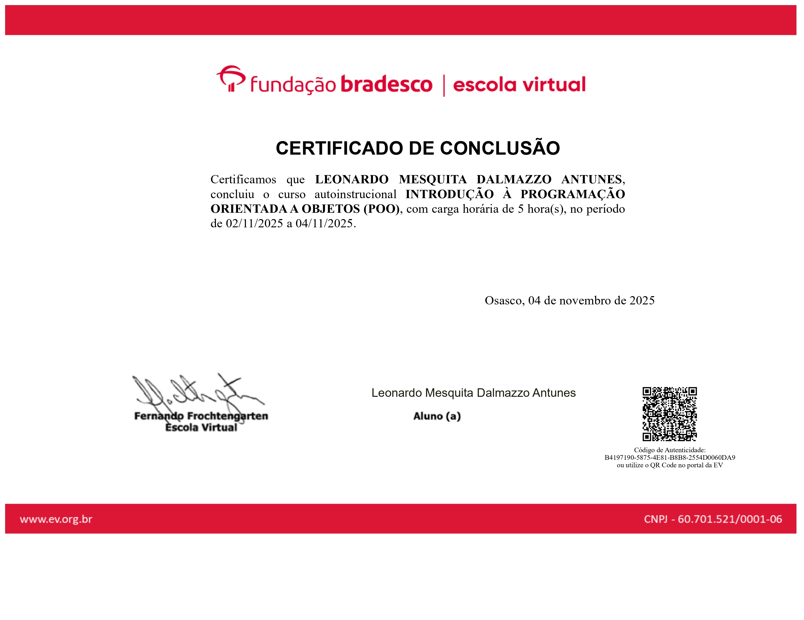
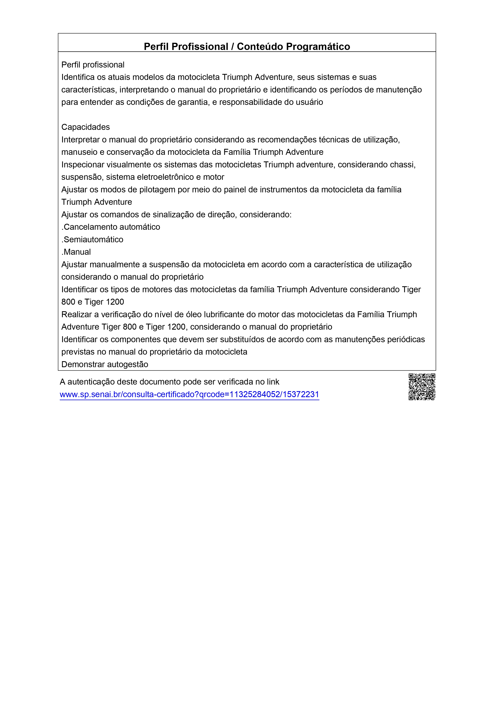
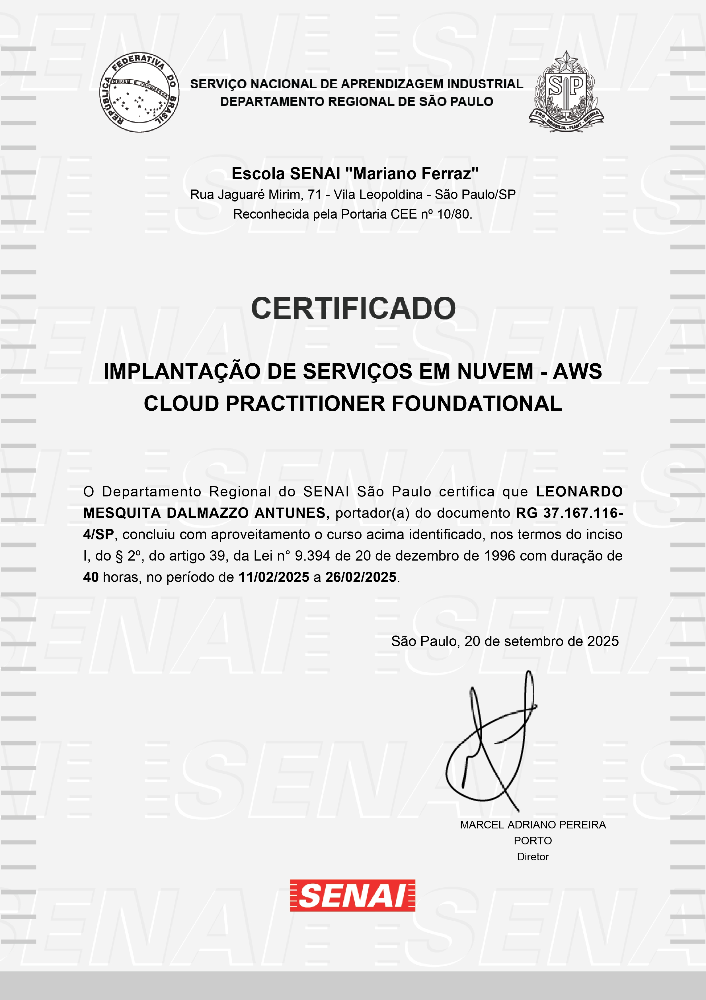
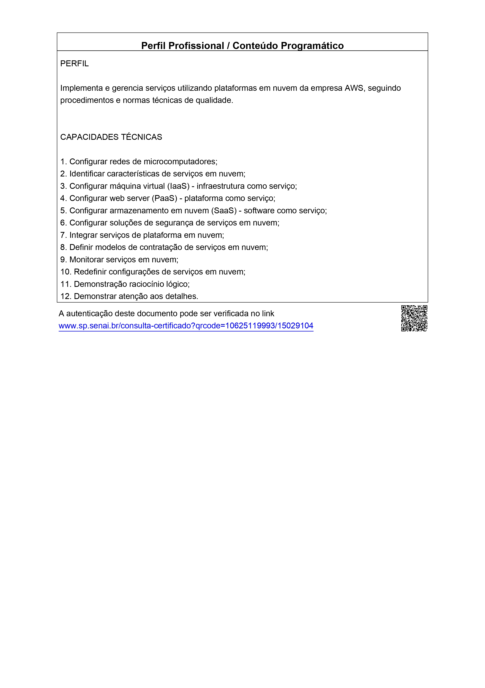
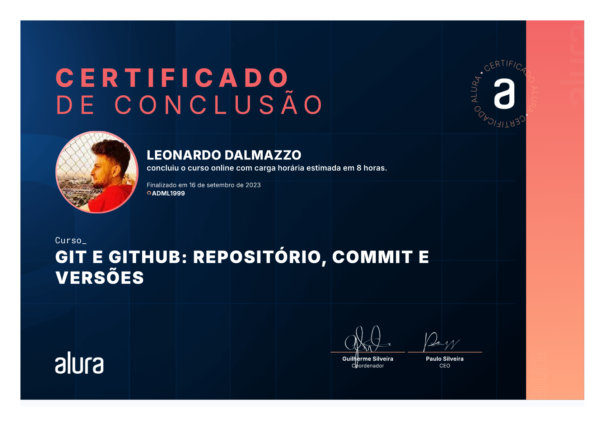

Postgres para devs .NET
Balta.io
Fundamentos de PostgreSQL para desenvolvimento de aplicações .NET. Carga horária: 1 hora.
Meus 17 certificados de cursos e formações, do mais recente ao mais antigo:
Balta.io
Fundamentos de PostgreSQL para desenvolvimento de aplicações .NET. Carga horária: 1 hora.

Balta.io
Fundamentos do Entity Framework para acesso a dados em aplicações .NET. Carga horária: 4 horas.

Cisco Networking Academy
Conclusão do curso introdutório de redes, com configuração de switches e roteadores, endereçamento IPv4 e IPv6 e segurança de redes.


SENAI "Anchieta"
Planejamento e implementação de redes LAN, configuração de roteadores e switches e endereçamento IP. Carga horária: 72 horas.

Balta.io
Acesso a dados com .NET e C#, utilizando Dapper e SQL Server. Carga horária: 5 horas.

Balta.io
Fundamentos de bancos de dados com SQL Server. Carga horária: 3 horas.

Balta.io
Fundamentos do paradigma de orientação a objetos no desenvolvimento de software. Carga horária: 4 horas.

Fundação Bradesco - Escola Virtual
Curso autoinstrucional sobre projetos de sistemas de tecnologia da informação. Carga horária: 15 horas.

Fundação Bradesco - Escola Virtual
Introdução à linguagem de programação Python. Carga horária: 18 horas.

Fundação Bradesco - Escola Virtual
Introdução aos conceitos de programação orientada a objetos. Carga horária: 5 horas.

Fundação Bradesco - Escola Virtual
Fundamentos de tecnologia da informação, hardware e software. Carga horária: 7 horas.

Senai "Conde José Vicente Azevedo"
"Compreensão e funcionamento de diversos sistemas que equipam as motocicletas Triumph Adventure."

Balta.io
"Aprenda ou consolide todos os conhecimentos necessários para trabalhar com C# e .NET!"

Balta.io
"Aprenda a criar sites responsivos utilizando HTML e CSS."

AWS Academy
Visão geral dos conceitos de computação em nuvem e produtos AWS.


SENAI "Mariano Ferraz"
"Competências relativas à implantação e gerenciamento de serviços em nuvem AWS."

Alura
"Principais comandos usados no dia a dia nesta ferramenta."